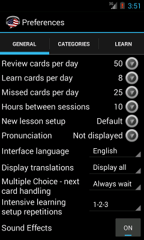
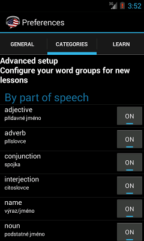
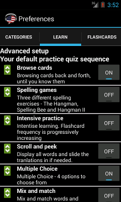

Nastavení (Preferences)
Nastavení je rozděleno do čtyř záložek.
Nastavení - Obecné nastavení

Na této stránce si upravíte různá základní nastavení. Hlasitost pro výslovnost si upravíte buď posunutím slideru na obrazovce nebo také stisknutím tlačítek pro ovládání hlasitosti na Vašem telefonu. Pokud chcete kompletně vypnout výslovnost, nastavte hlasitost na nulu. Při zapnutých zvukových efektech budou při některých cvičeních přehrávány další zvuky, například v Multiple choice se přehrají různé melodie podle toho jestli odpovíte správně nebo chybně.
-
Počet slovíček v Review/den (Reviewcards per day) - nastavte si kolik slovíček budete revidovat během Review aktivity. Tuto hodnotu si zvolte podle toho kolik času chcete strávit učením.
-
Nová slovíčka/den (Learncards per day) - zvolte si počet nových slovíček, které se chcete naučit během aktivity Learn New. Tato volba Vám umožní nastavit jak rychle si budete přidávat nová slovíčka do Vaší slovní zásoby a kolik nových slovíček se naučíte každý den. Zpočátku si nastavení můžete krátkodobě navolit na vysoké číslo, ale dlouhodobě se asi nebudete učit více než 10 slovíček za den.
-
*Missed cards per day - tato funkce není ještě k dispozici.
Reset preferences button will enable all categories which have previously disabled. This action will not modify any profficiency settings or previous results, this process will only enable all the words and all the categories for your learning exercise. The program collects various anonymous statistics about the dictionary. If you allow to send anonymous statistics, the data will be used to make the dictionary better and more accurate. The program collects details such as your edit to the flashcards or the frequency which words were reviewed when in order to adjust the algorithms and learning experience.
Nastavení - Slovní druhy a úrovně slovíček

Na této obrazovce si nastavíte filtr podle slovního druhu. Podstatná jména a slovesa jsou ve slovníku zastoupena nejvíce. Podstatná jména se obvykle učí snadněji než ostatní slovní druhy. Tento filtr je aplikovaný pouze na nová slova v rámci aktivity Learn New.
Když se chcete naučit nový jazyk, tak je jednoduché začít se učit podstatná jména, potom slovesa a nakonec ostatní slovní druhy. Tímto způsobem si rychle osvojíte novou slovní zásobu a naučíte se tak používat nový jazyk.
Nastavení - Cvičení a hry

V této sekci si nastavíte předvolená cvičení pro aktivity Learn Missed a Learn New. Nastavíte si jaká cvičení se spustí implicitně a také si můžete nastavit v jakém pořadí se spustí. Posuňte jednotlivými řádky pro změnu pořadí a klikněte na tlačítko pro aktivování/deaktivování daného cvičení.
Toto nastavení se použije jenom pro aktivity Learn Missed a Learn New. Při procházení aktivit v rámci aktivity Recap si můžete cvičení navolit individuálně.
Můžete si také omezit z jakých úrovní obtížnosti se budou aktivovat nová slovíčka. Změny v nastavení úrovní se neprojeví ihned, ale až v příští lekci.
Pro podrobnější popis jednotlivých cvičení si klikněte na popis praktických cvičení. V předinstalovaném nastavení jsou aktivována cvičení Browse Cards a Multiple Choice pro základní učební aktivity, protože tato cvičení jsou jednoduchá. Podle potřeby si nastavte i ostatní cvičení.
Nastavení - Posloupnost kartiček

Na této stránce si nastavíte v jakém pořadí se budete učit nová slovíčka. V předinstalovaném nastavení se budete nejdříve učit Anglicko>České termíny, protože obvykle chcete porozumět nejdříve cizím slovíčkům. Jakmile se naučíte význam cizího slova a budete ho umět přeložit, aktivuje se Česko>Anglická kartička. V poslední úrovni si ověříte že rozumíte mluvenému slovu a v tomto okamžiku se aktivuje audio kartička.
Přednastavené pořadí si můžete změnit podle potřeby. Posuňte jednotlivé řádky do požadovaného pořadí a klikněte na tlačítko pokud chcete některé úrovně kompletně vypnout